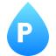

– Nykyinen favicon (vertailu, läpinäkyvä tausta)

Nykyinen: cyan P + katto ilman taustaa. Tummalla välilehdellä se näkyy hyvin, vaalealla cyan on haalea.
Vain vertailua varten.
/favicon.svgLuonnos. Jokainen vaihtoehto näkyy isona ja oikeassa koossa (16 ja 32 px) vaalealla ja tummalla selaimen välilehdellä. Tuotannon favicon ei ole vaihtunut. Tiedostot: /favicon-vaihtoehdot/*.svg.
Nykyinen: cyan P + katto ilman taustaa. Tummalla välilehdellä se näkyy hyvin, vaalealla cyan on haalea.
Vain vertailua varten.
/favicon.svgSama P + katto kuin nykyisessä faviconissa, navy pyöreällä taustalla ja ohuella renkaalla, joka erottuu tummalla välilehdellä.
Pienessä koossa ohut serif-P ja ohut katto pehmenevät, mutta muoto tunnistuu.
00-navy-pyorea.svgSivuston maalikeltainen, navy P + katto. Kirkkain ja erottuvin vaihtoehto.
Toimii hyvin sekä vaalealla että tummalla.
01-keltainen.svgTiilenpunainen pyöristetty neliö, valkoinen P + katto. Viittaa suoraan tiilikattoon.
Toimii hyvin, katto näkyy vielä 16 px:ssä.
02-tiilenpunainen.svgPelkkä iso P valkoisena navyllä. Selkein ja yksinkertaisin.
Erinomainen 16 px:ssä; katto jää pois.
03-iso-p.svgPelkkä katto: kaksi paksua harjaviivaa (cyan ja valkoinen), ei kirjainta.
Hyvä 16 px:ssä, mutta ei kerro yrityksen nimeä.
04-pelkka-katto.svgTalosiluetti ilman taustaa, sininen liukuväri ja valkoinen P.
Toimii vaalealla ja tummalla; muoto tekee siitä erilaisen kuin muut.
05-talo-siluetti.svgKuusikulmio vihreällä liukuvärillä, valkoinen P. Täysin erivärinen ja kulmikas.
Hyvä; vihreä ei ole sivuston väripaletissa.
06-kuusikulmio-vihrea.svg
Maalipisara cyan–sininen liukuväri, valkoinen P. Kertoo maalauksesta.
Hyvä; P on pieni 16 px:ssä.
07-maalipisara.svgKattotiilirivit sinisen sävyissä, iso valkoinen P ohuella navy-reunalla.
Levoton 16 px:ssä; P erottuu silti.
08-kattotiilet.svgKulmikas P, jonka kuppi on talon muotoinen (harjakatto). Yksi yhtenäinen merkki, sininen pyöreä.
Toimii, mutta 16 px:ssä P:n kuppi näyttää talolta.
09-p-harjakatto.svgKirkas cyan–sininen liukuväri pyöreänä, navy P + katto.
Toimii hyvin sekä vaalealla että tummalla.
10-kirkas-gradientti.svg